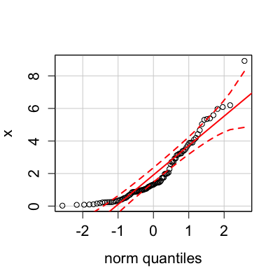
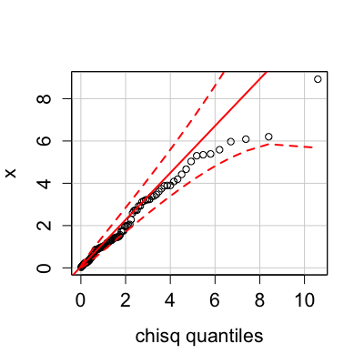

Usage
qqPlot(x, ...) qqp(...) qqPlot(x, distribution = "norm", ..., ylab = deparse(substitute(x)), xlab = paste(distribution, "quantiles"), main = NULL, las = par("las"), envelope = 0.95, col = palette()[1], col.lines = palette()[2], lwd = 2, pch = 1, cex = par("cex"), line = c("quartiles", "robust", "none"), labels = if (!is.null(names(x))) names(x) else seq(along = x), id.method = "y", id.n = if (id.method[1] == "identify") Inf else 0, id.cex = 1, id.col = palette()[1], grid = TRUE) qqPlot(x, xlab = paste(distribution, "Quantiles"), ylab = paste("Studentized Residuals(", deparse(substitute(x)), ")", sep = ""), main = NULL, distribution = c("t", "norm"), line = c("robust", "quartiles", "none"), las = par("las"), simulate = TRUE, envelope = 0.95, reps = 100, col = palette()[1], col.lines = palette()[2], lwd = 2, pch = 1, cex = par("cex"), labels, id.method = "y", id.n = if (id.method[1] == "identify") Inf else 0, id.cex = 1, id.col = palette()[1], grid = TRUE, ...)
Arguments
- x
- vector of numeric values or
lmobject. - distribution
- root name of comparison distribution -- e.g.,
"norm"for the normal distribution;tfor the t-distribution. - ylab
- label for vertical (empirical quantiles) axis.
- xlab
- label for horizontal (comparison quantiles) axis.
- main
- label for plot.
- envelope
- confidence level for point-wise confidence envelope, or
FALSEfor no envelope. - las
- if
0, ticks labels are drawn parallel to the axis; set to1for horizontal labels (seepar). - col
- color for points; the default is the first entry
in the current color palette (see
paletteandpar). - col.lines
- color for lines; the default is the second entry in the current color palette.
- pch
- plotting character for points; default is
1(a circle, seepar). - cex
- factor for expanding the size of plotted symbols; the default is
1. - labels
- vector of text strings to be used to identify points, defaults to
names(x)or observation numbers ifnames(x)isNULL. - id.method
- point identification method. The default
id.method="y"will identify theid.npoints with the largest value ofabs(y-mean(y)). SeeshowLabelsfor other options. - id.n
- number of points labeled. If
id.n=0, the default, no point identification. - id.cex
- set size of the text for point labels; the default is
cex(which is typically1). - id.col
- color for the point labels.
- lwd
- line width; default is
2(seepar). - line
"quartiles"to pass a line through the quartile-pairs, or"robust"for a robust-regression line; the latter uses therlmfunction in theMASSpackage. Specifyingline = "none"suppresses the line.- simulate
- if
TRUEcalculate confidence envelope by parametric bootstrap; forlmobject only. The method is due to Atkinson (1985). - reps
- integer; number of bootstrap replications for confidence envelope.
- ...
- arguments such as
dfto be passed to the appropriate quantile function. - grid
- If TRUE, the default, a light-gray background grid is put on the graph
Description
Plots empirical quantiles of a variable, or of studentized residuals from a linear model, against theoretical quantiles of a comparison distribution.
Details
Draws theoretical quantile-comparison plots for variables and for studentized residuals from a linear model. A comparison line is drawn on the plot either through the quartiles of the two distributions, or by robust regression.
Any distribution for which quantile and
density functions exist in R (with prefixes q and d, respectively) may be used.
Studentized residuals from linear models are plotted against the appropriate t-distribution.
The function qqp is an abbreviation for qqPlot.
Value
These functions return the labels of identified points.
References
Fox, J. (2008) Applied Regression Analysis and Generalized Linear Models, Second Edition. Sage.
Fox, J. and Weisberg, S. (2011) An R Companion to Applied Regression, Second Edition, Sage.
Atkinson, A. C. (1985) Plots, Transformations, and Regression. Oxford.
Examples

